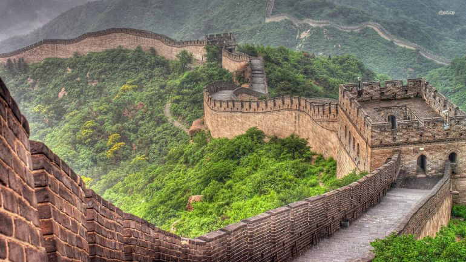

Torna indietro
Torna indietroBenvenuti in Asia
Primo continente in termine di grandezza con oltre 4.4 miliardi di abitanti,
L'Asia con i suoi 51 stati ospita il 61% della popolazione mondiale
Clicca la freccia per andare in basso
Torna indietroPrimo continente in termine di grandezza con oltre 4.4 miliardi di abitanti,
L'Asia con i suoi 51 stati ospita il 61% della popolazione mondiale
|

Grande Muraglia,Cinaè una delle più famose meraviglie del mondo ed è stata inclusa nella lista del Patrimonio dell'Umanità dell'Unesco sin dal 1987. Proprio come un enorme drago, la Grande Muraglia si snoda su e giù per montagne e attraverso deserti e praterie, percorrendo un totale di 21,196.18 chilometri dalla costa est fino ai deserti a ovest. |

Himalaya,Nepall posto più alto del mondo, uno dei posti più belli dell’Asia: è l’Himalaya, il “tetto del mondo”, la catena montuosa con le cime più elevate del Pianeta. Himalaya significa “dimora delle nevi”: e non faticherete a capire il perché. In questa area del pianeta, originatasi in milioni di anni dallo scontro tra il subcontinente indiano e l’Eurasia |
Petra,GiordaniaAbbandonata nell’ottavo secolo, la città di Petra fu riscoperta solo nell’Ottocento: è una città di pietra, nel deserto, con le facciate scavate direttamente nella roccia e che appaiono improvvisamente ai viaggiatori allo sbocco di una stretta gola chiamata Siq, a circa tre ore di viaggio dalla capitale della Giordania, Amman. |

Tokyo,GiapponeTokyo situata sull’isola di Honshu, all’interno della baia omonima, Tokyo conta oltre 11.800.000 abitanti fra nucleo cittadino e agglomerato urbano. Forma con altre città, fra cui anche Yokohama e Kewasaki, una delle più grandi megalopoli del mondo (oltre 30.000.000 di abitanti). |
© 2018 Traveller ALL RIGHTS RESERVED